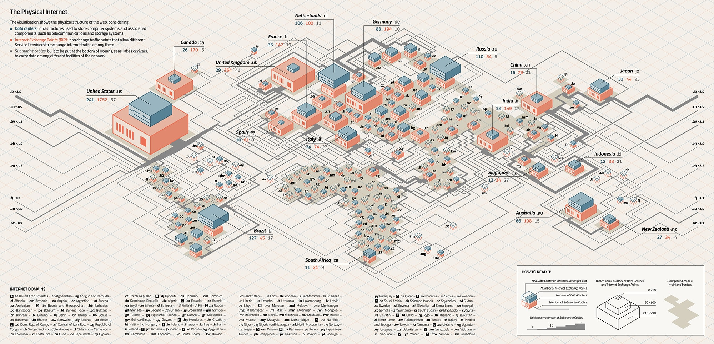
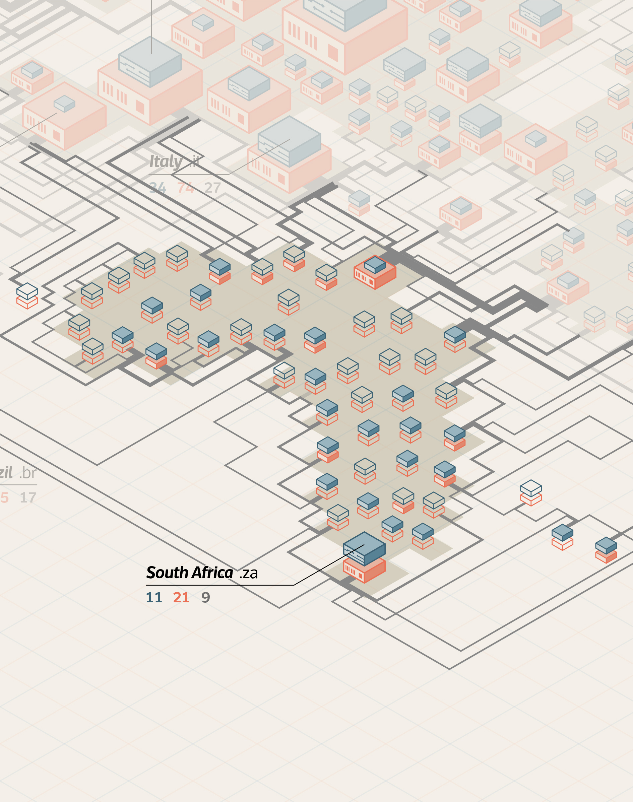
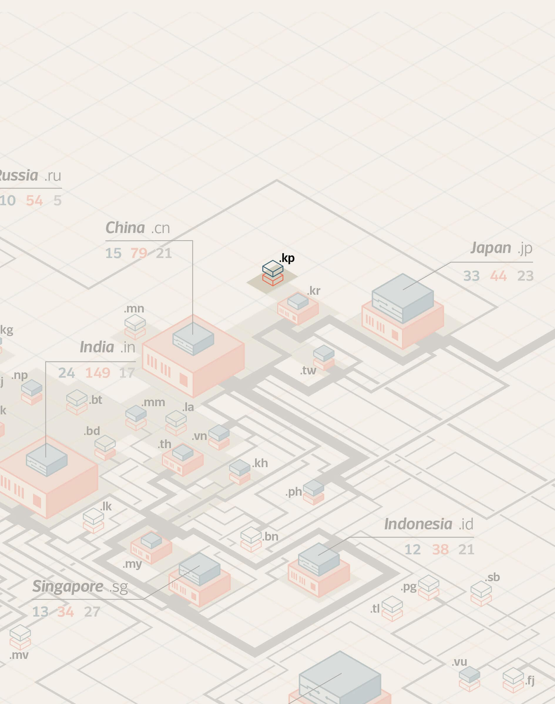
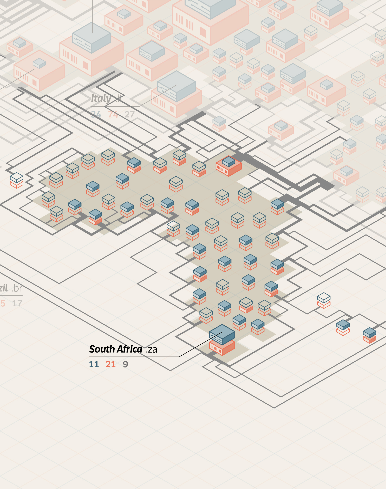
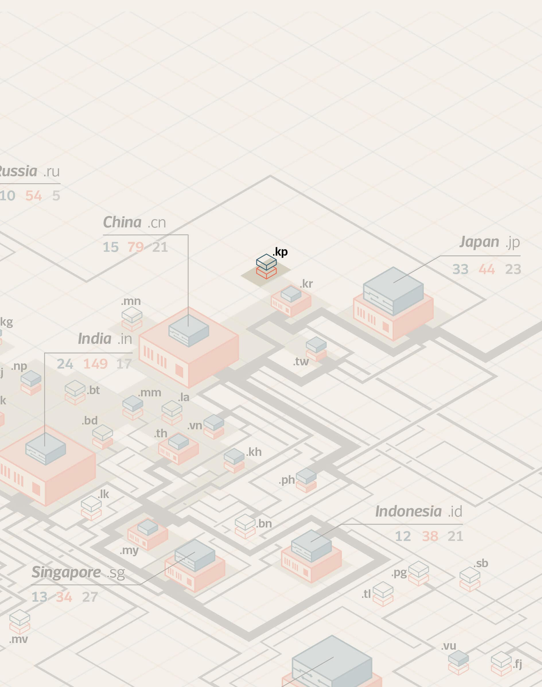

The Physical Internet is a work of data analysis and visualization designed for a mirror named La Lettura, part of Corriere della Sera newspaper. Physical Internet is not something on the cloud, but rather a structure made of physical objects: routers, cables, antennas, internet exchange points and data centers are just some of the elements that make this communication possible. The visualization focuses on showing the physical structures and the three main objects: data centers, internet exchange points and submarine cables.
Colors and visual style
The object of two rectangles represent the number of infrastructures in a country.
The blue one indicates the number of IXPs, while the orange one stands for Data Centers. The outline shape means that there are nor IXPs nor DCs.
Dimensions of Data Centers and IXP
The dimensions are scaled in a range of seven different sizes.
The United States are represented out of scale,proportional to its number of Data Centers (1752) and IXPs (241).
Thickness of the lines
The cables are drawn as lines, whose thickness is proportional to the real number of cables.
Background color
The continents are differentiated from the oceans using a darker hue of the visualization base colour.

As one of the communication goals was to represent the physicality of the Internet, the various infrastructures are represented as 3D objects, collocated in a map that let see the connections between continents and countries.
 



This type of visualization is useful to understand political and economic situations. It is already familiar that the northern part of the world globe is more developed than the southern part. You can immediately identify the most connected countries, like the United States of America, The United Kingdom, France, The Netherlands, Germany, Russia and Australia.